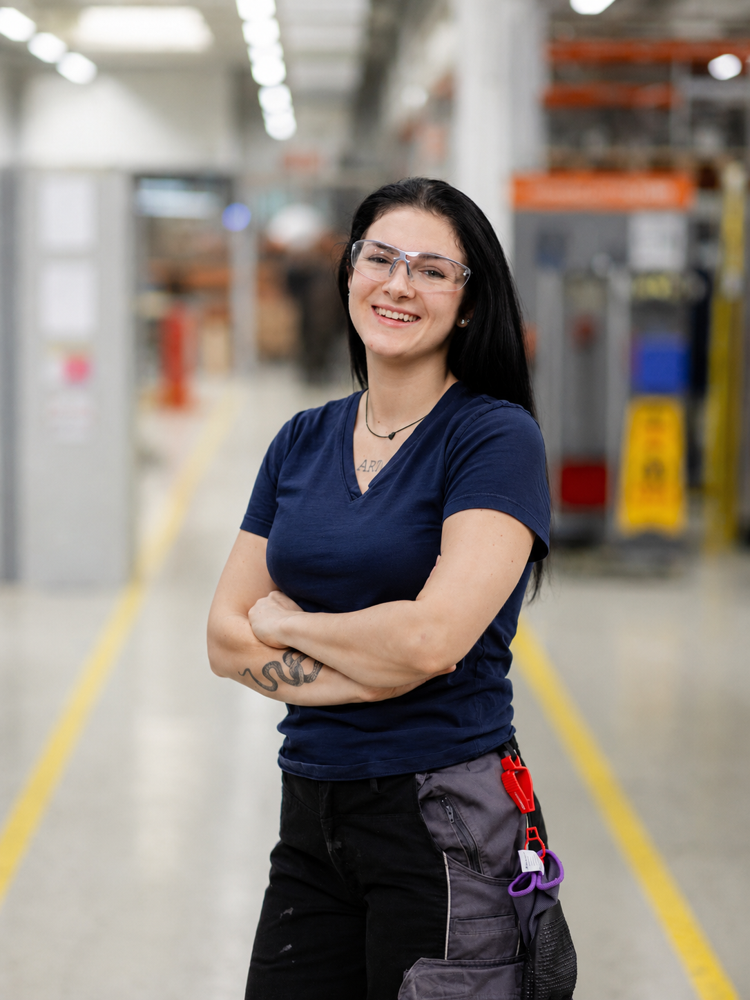

2025 — PRESENT
EDUCATION
Master Interactive Technologies
University of Applied Sciences St. Pölten · Focus on Industry 4.0 systems and the conception and implementation of digital industrial solutions.
Industrial Automation · Machine Learning · Industry 4.0
I am currently studying Interactive Technologies with a focus on Industry 4.0 at the University of Applied Sciences St. Pölten. My interests include industrial automation, machine learning, process data analysis and the development of data-driven solutions for industrial applications.

My work sits at the intersection of industrial automation, electrical engineering and manufacturing, applying machine learning and process data analysis to build data-driven solutions for Industry 4.0.
I focus on turning complex industrial process data into actionable insight: understanding multivariate time-series, detecting anomalies, and contributing to the optimization of real production systems through practical, methodologically sound approaches.
Education and professional experience
University of Applied Sciences St. Pölten · Focus on Industry 4.0 systems and the conception and implementation of digital industrial solutions.
TE Connectivity, Waidhofen/Thaya · Production planning systems, SAP and HYDRA, master data management, IBP and digitalization projects.
University of Applied Sciences St. Pölten · Graduated Cum Laude. Thesis: Neural networks for automated controller parameterization.
TE Connectivity & LBS Amstetten · Electrical engineering, PLC and microcontroller programming, EPLAN, equipment maintenance and process improvement.
Bundesgymnasium Gmünd, Austria.
Research on suitable machine learning methods for detecting anomalies in multivariate industrial time-series data from an industrial pusher furnace.
View Project→Get in touch about research, collaboration or industrial data-driven projects.